Protocolli sicuri
Table of contents
1 Introduzione alla crittografia
La sicurezza informatica mira a garantire questi 3 fattori:
- Riservatezza (Confidentiality)
- Integrità (Integrity)
- Disponibilità (Availability)
L'idea alla base della crittografia è quella di nascondere le informazioni all'interno del messaggio usando dei metodi conosciuti soltanto dal mittente e dal destinatario. In questo modo, l'attaccante può accedere alle informazioni ma non sarà in grado di decifrarle. La crittografia moderna cerca di garantire:
- sicurezza;
- integrità;
- autenticità;
basandosi su:
- la sicurezza di una chiave, anche se il metodo è pubblico;
- la difficoltà di problemi matematici complessi;
2 Setting simmetrico
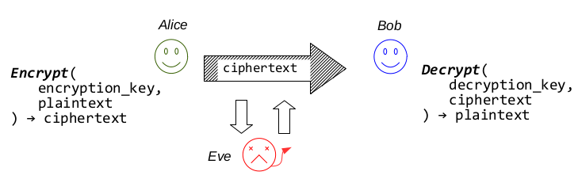 In questo caso, Alice e Bob condividono la stessa chiave.
- keygen(size) \(\rightarrow\) key;
- encr(key,p) \(\rightarrow\) c;
- decr(c, key) \(\rightarrow\) p;
Dove encr è una funzione probabilistica, quindi l'output è essenzialmente diverso ogni volta che viene eseguita (anche con lo stesso input). Ovviamente tutti gli elementi in gioco sono dati binari. Spesso si inviano anche dei dati associati (associated data) che non vengono criptati. Quindi per quanto riguarda i dati associati vengono garantite autenticità e integrità, ma non confidenzialità (essendo in plain-tex). In questo caso, si parla di AEAD (Authenticated Encryption with Associated Data).
In base alle situazioni si può usare anche un'approccio di tipo deterministico:
- keygen(size) \(\rightarrow\) key;
- encr(key,{n|iv},p) \(\rightarrow\) c;
- decr(c,{n|iv},key) \(\rightarrow\) p;
n sta per nonce ed è un valore usato quando si vuole ottenere con sicurezza un valore unico (per questo l'approccio è deterministico, bisonga avere la certezza di ottenere un valore con certe caratteristiche). iv sta per Initialization Vector ed è utile quando si punta alla randomness della cifratura.
3 Setting asimmetrico
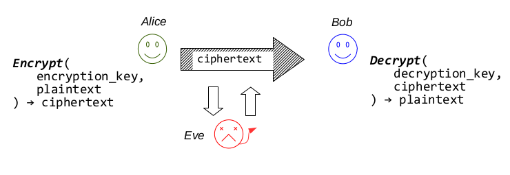 In questo caso, Alice e Bob hanno rispettivamente una encryption key(pubblica) e una decryption key(segreta). Il problema della crittografia simmetrica è che è molto difficile distribuire delle chiavi segrete senza avere informazioni a priori su i capi della comunicazione. Per questo nel setting a-simmetrico si introduce il concetto di key pair (chiave privata e chiave pubblica).
- alice: encrypt(Bob's pk,message) \(\rightarrow\) cipher;
- bob: decrypt(Bob's sk, chiper) \(\rightarrow\) message;
3.1 KEM (Key Encapsulation Mechanism)
I Kem sono dei meccanismi asimmetrici specializzati per criptare le chiavi simmetriche.
In effetti i meccanismi asimmetrici sono estremamente costosi, quindi si preferisce usarli per criptare dati di piccole dimensioni. In un approccio ibrido si usano quindi schemi asimmetrici per criptare le chiavi simmetriche, mentre i dati effettivi vengono criptati usando l'approccio simmetrico.
3.2 Firme Digitali
Le firme digitali sono un metodo per autenticare un messaggio.
- sign(sk, messagge) \(\rightarrow\) signature;
- verify (pk,message,signature) \(\rightarrow\) {true,false};
In questo caso la firma digitale può essere validata da tutti, ma soltanto il proprietario della chiave segreta può produrla.
👉 non repudiability: alice non può negare di aver firmato i dati.
3.3 Diffie-Hellman Key Exchange
Si tratta di un modo sicuro per scambiarsi chiavi simmetriche. 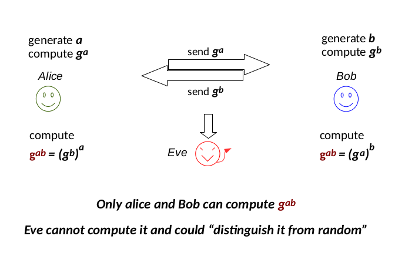 E' abbastanza intuitivo il fatto che questo tipo di approccio non autentica i due comunicanti, perciò può essere facilmente rotto da un Man-in-the-Middle: 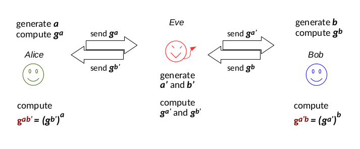 per risolvere questo problema, Alice può decidere di firmare \(g^a\) usando un sistema di firma digitale.
4 Altri settings
- Secure key exchange protocols: Alice e Bob non hanno nessuna chiave, cercano di ottenerla usando un canale di comunicazione insicuro.
- Secure storage: i dati confidenziali sono mantenuti in dei database sicuri;
- Strong autentication: ci si basa su un processo di autenticazione, in cui si prova la conoscenza di un'informazione segreta.
- Password protection …
5 Funzioni Hash
Come prima cosa, ci si ricordi che le funzioni hash (usate singolarmente) garantiscono soltanto l'Integrità del messaggio. Esse trasformano un'input di lunghezza arbitraria in un digest di piccole dimensioni.
- Collision resistant \(\rightarrow\) è praticamente impossibile trovare due input che forniscono lo stesso digest dopo l'applicazione della funzione hash. Si può quindi affermare che:
Esempio di uso delle funzioni hash in un contesto reale: 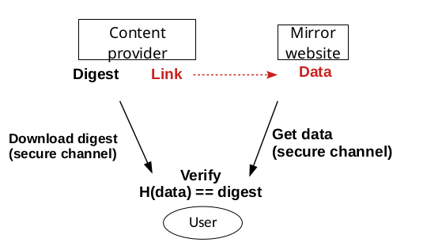 Per concatenare delle stringhe in input bisogna prestare attenzione: 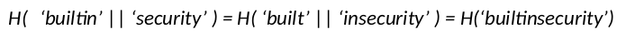 per risolvere questo problema si usano dei caratteri speciali di concatenazione. In generale, ogni funzione hash per cui si trovano collisioni viene deprecata (md5, sha1,sha2,sha3).
6 MAC(Message Authentication Codes)
- MAC(secret key, message) \(\rightarrow\) tag;
Il compito del ricevente è quello di ri-calcolare il tag e confrontarlo con quello ricevuto, per verificarne la correttezza e la legittimità. E' importante non confondere questo procedimento con l'hashing, che non fa uso di informazioni segrete.
- L'uso del MAC in un contesto simmetrico da due garanzie:
- Integrità: comparando i due tag calcolati, si riesce a capire se qualcuno ha compromesso i dati.
- Autenticità: il sender "legittimo" può essere soltanto una persona che
condivide con il receiver una chiave segreta, in particolare la stessa
in un contesto simmetrico. Si dice quindi che il MAC
autenticai dati che vengono inviati!
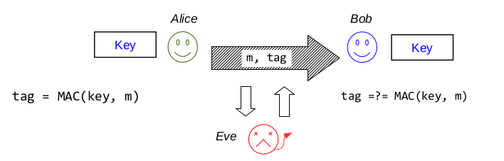 Un possibile attacco a cui sono vulnerabili alcuni metodi che fanno uso di MAC per l'autenticazione è il replay attack, in cui l'attaccante ri-invia il messaggio che ha letto sul canale di comunicazione. In questo modo, il messaggio replicato viene considerato "legittimo" dal ricevente.
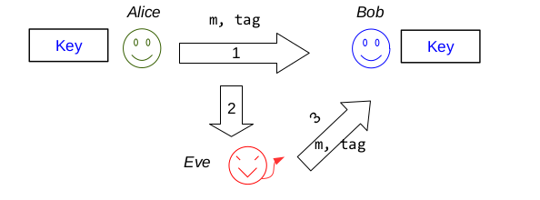 Un metodo semplice per prevenire questi attacchi è usare degli identificatori univoci che vengono letti dal ricevente.
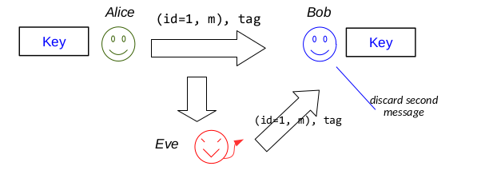
Un'altro problema è dato dalla comunicazione full duplex: infatti l'attaccante potrebbe replicare il messaggio "all'indietro", che viene riconosciuto come valido dal mittente, in quanto ha lo stesso tag che lui stesso ha calcolato. Per risolvere questo problema si usano dei bit direzionali come in figura:
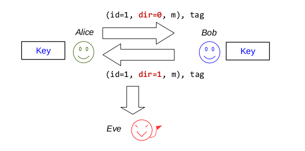
Un'altro layer di sicurezza divide il singolo canale full-duplex in due canali half-duplex.
6.1 Hmac
Hmac è un modo di rendere MAC più sicuro usando anche in "black-box" delle funzioni hash collision resistant. Lo schema è il seguente: 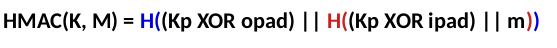
7 Secure Key Exchange Protocols
Mettiamo che Alice e Bob vogliano ottenere una chiave condivisa, usando un canale di comunicazione potenzialmente insicuro.
7.1 Protezione da attacchi passivi
Alice manda una chiave criptata tramite KEM a Bob. 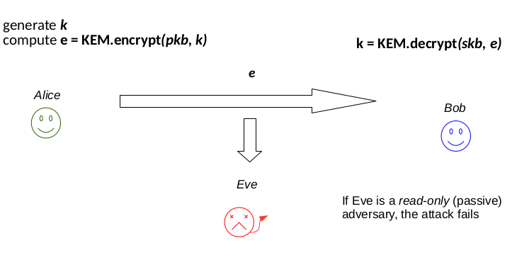
7.2 Protezione da attacchi MITM
Il cripting asimmetrico non dà garanzia di autenticità, quindi Bob non ha modo di sapere se il messaggio è stato mandato da Alice o da Eve. 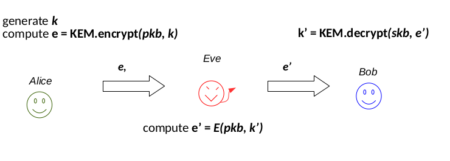 Una possibile soluzione da parte di Alice è quella di usare una firma digitale: 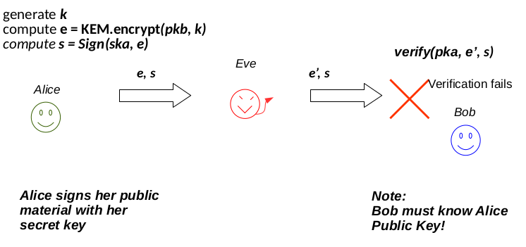
8 Computational Security
Il livello di sicurezza di uno schema è il numero medio di operazioni necessarie per romperlo.
- 80 bit security: \(2^{80}\) operazioni;
- 112 bit security: \(2^{112}\) operazioni, considerato sicuro fino al 2030.
- 128 bit security: \(2^{128}\) operazioni, ancora in fase di sviluppo.
Negli schemi simmetrici, il livello di sicurezza è definito dalla grandezza della chiave simmetrica: 128 bit key \(\rightarrow\) 128 bit security (approssimativamente).